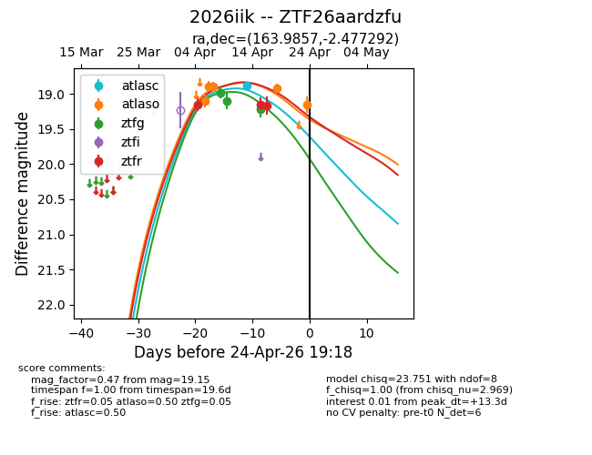
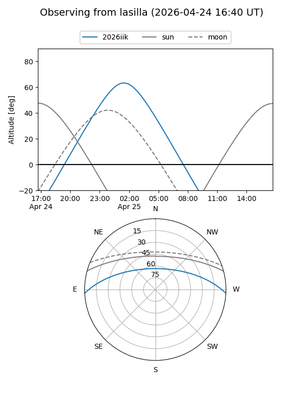
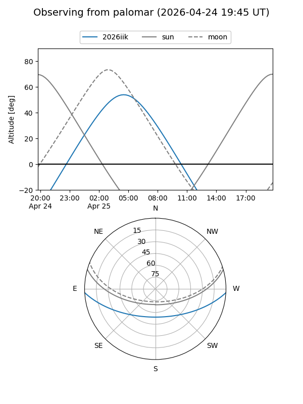
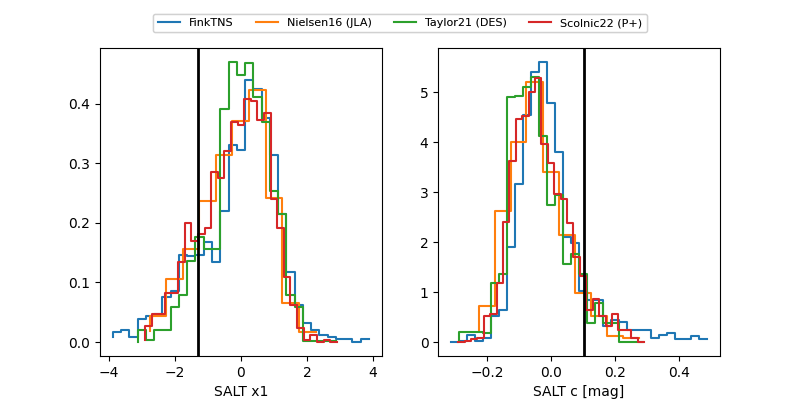

2026iik
Target 2026iik at 2026-04-24 19:20
Aliases and brokers:
FINK: link
Lasair: link
ALeRCE: link
TNS: link
YSE: link
alt names
ZTF26aardzfu (ztf,fink_ztf)
2026iik (tns,yse)
Coordinates:
equatorial (ra, dec) = 163.9857,-2.47729
equatorial (HMS+DMS) = 10:55:56.58,-02:28:38.25
galactic (l, b) = (255.1289,+49.36843)
Flags:
Photometry:
last atlasc=18.88, atlaso=19.15, ztfg=19.21, ztfr=19.16
1 atlasc, 5 atlaso, 3 ztfg, 3 ztfr detections
Lightcurve

Visibility


Additional plots
